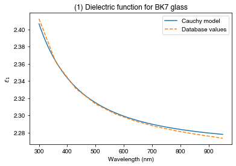
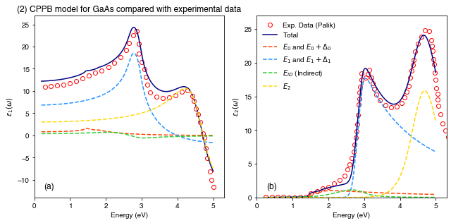

import matplotlib.pyplot as plt
import numpy as np
from solcore.absorption_calculator import search_db
from solcore.absorption_calculator.cppm import Custom_CPPB
from solcore.absorption_calculator.dielectric_constant_models import Oscillator
from solcore.absorption_calculator.dielectric_constant_models import DielectricConstantModel, Cauchy
from solcore.structure import Structure
from solcore import material
wl = np.linspace(300, 950, 200)*1e-9Example 2b: Optical constant models
We may want to model the optical constants of a material using analytic expressions, rather than just take data from a table; this can be useful when e.g. fitting ellipsometry data for a material with unknown optical constants, or if you do not have refractive index data for a material but have some information about where critical points in the band structure occur. In this example we will consider a simple model for a dielectric material, and a more complex model for GaAs, a semiconductor.
We search the database for BK7 (borosilicate crown glass) and select the second entry, “Ohara” (index 1). We then select the first item in that list, which is the pageid of the entry - this is what we need to tell Solcore what item to access in the database.
pageid = search_db("BK7")[1][0];
BK7 = material(str(pageid), nk_db=True)()Database file found at /Users/phoebe/.solcore/nk/nk.db
18 results found.
pageid shelf book page filepath hasrefractive hasextinction rangeMin rangeMax points
963 glass BK7 SCHOTT glass/schott/N-BK7.yml 1 1 0.3 2.5 25
964 glass BK7 OHARA glass/ohara/S-BSL7.yml 1 1 0.29 2.4 31
965 glass BK7 HIKARI glass/hikari/J-BK7A.yml 1 1 0.365015 2.05809 33
966 glass BK7 CDGM glass/cdgm/H-K9L.yml 1 1 0.365 1.711 34
967 glass BK7 HOYA glass/hoya/BSC7.yml 1 1 0.36501 1.01398 38
968 glass BK7 SUMITA glass/sumita/K-BK7.yml 1 1 0.36 1.55 25
969 glass BK7 LZOS glass/lzos/K8.yml 1 0 0.365 2.3254 31
1090 glass SCHOTT-BK BK7G18 glass/schott/BK7G18.yml 1 1 0.38 2.5 18
1091 glass SCHOTT-BK N-BK7 glass/schott/N-BK7.yml 1 1 0.3 2.5 25
1092 glass SCHOTT-BK N-BK7HT glass/schott/N-BK7HT.yml 1 1 0.3 2.5 25
1093 glass SCHOTT-BK N-BK7HTi glass/schott/N-BK7HTi.yml 1 1 0.3 2.5 25
1095 glass SCHOTT-BK P-BK7 glass/schott/P-BK7.yml 1 1 0.31 2.5 24
1683 glass HIKARI-BK E-BK7 glass/hikari/E-BK7.yml 1 1 0.4 0.7 32
1684 glass HIKARI-BK J-BK7 glass/hikari/J-BK7.yml 1 1 0.365015 2.05809 33
1685 glass HIKARI-BK J-BK7A glass/hikari/J-BK7A.yml 1 1 0.365015 2.05809 33
2452 glass SUMITA-BK K-BK7 glass/sumita/K-BK7.yml 1 1 0.36 1.55 25
2819 other BK7_matching_liquid Cargille index-matching liquids/cargille/BK7_matching_liquid.yml 1 0 0.31 1.55 200
2904 3d glass BK7 glass/schott/N-BK7.yml 1 1 0.3 2.5 25Next, we define a Cauchy oscillator model. We put this into the DielectricConstantModel class; in theory, we could add as many oscillators as we want here.
The parameters for the Cauchy model for BK7 are from Wikipedia: https://en.wikipedia.org/wiki/Cauchy%27s_equation
cauchy = Cauchy(An=1.5046, Bn=0.00420, Cn=0, Ak=0, Bk=0, Ck=0)
model = DielectricConstantModel(e_inf=0, oscillators=[cauchy])Calculate the dielectric function which result from the Cauchy model, then get the \(n\) and \(\kappa\) data from the database BK7 material for the complex refractive index:
eps = model.dielectric_constants(wl*1e9)
nk = BK7.n(wl) + 1j*BK7.k(wl)Database file found at /Users/phoebe/.solcore/nk/nk.db
Material glass/ohara/S-BSL7.yml loaded.
Database file found at /Users/phoebe/.solcore/nk/nk.db
Material glass/ohara/S-BSL7.yml loaded.Calculate the dielectric function by squaring the refractive index:
eps_db = nk**2PLOT 1: Plot the database values of e_1 (real part of the dielectric function) against the Cauchy model values:
plt.figure()
plt.plot(wl*1e9, np.real(eps), label='Cauchy model')
plt.plot(wl*1e9, np.real(eps_db), '--', label='Database values')
plt.legend()
plt.ylabel(r'$\epsilon_1$')
plt.xlabel('Wavelength (nm)')
plt.title("(1) Dielectric function for BK7 glass")
plt.show()
Here, we have just looked at the real part of the dielectric function, but you can include absorption (non-zero e_2) in the dielectric constant models too.
Now let’s look at a more complicated CPPB (Critical Point Parabolic Band) model for GaAs. First, read in experimental data for GaAs dielectric function (from Palik)…
Palik_Eps1 = np.loadtxt("data/Palik_GaAs_Eps1.csv", delimiter=',', unpack=False)
Palik_Eps2 = np.loadtxt("data/Palik_GaAs_Eps2.csv", delimiter=',', unpack=False)Generate a list of energies over which to calculate the model dielectric function and create the CPPB_model Class object:
E = np.linspace(0.2, 5, 1000)
CPPB_Model = Custom_CPPB()The Material_Params method loads in the desired material parameters as a dictionary (for some common materials):
MatParams = CPPB_Model.Material_Params("GaAs")Parameters can be customised by assigning to the correct dictionary key:
MatParams["B1"] = 5.8
MatParams["B1s"] = 1.0
MatParams["Gamma_Eg_ID"] = 0.3
MatParams["Alpha_Eg_ID"] = 0.0
MatParams["E1"] = 2.8
MatParams["E1_d1"] = 2.9
MatParams["Gamma_E1"] = 0.1
MatParams["E2"] = 4.72
MatParams["C"] = 3.0
MatParams["Alpha_E2"] = 0.04
MatParams["Gamma_E2"] = 0.19Must define a structure object containing the required oscillator functions. The oscillator type and material parameters are both passed to individual ‘Oscillators’ in the structure:
Adachi_GaAs = Structure([
Oscillator(oscillator_type="E0andE0_d0", material_parameters=MatParams),
Oscillator(oscillator_type="E1andE1_d1", material_parameters=MatParams),
Oscillator(oscillator_type="E_ID", material_parameters=MatParams),
Oscillator(oscillator_type="E2", material_parameters=MatParams)
])
Output = CPPB_Model.eps_calc(Adachi_GaAs, E)PLOT 2: real and imaginary part of the dielectric constant, showing the individual contributions of the critical points.
fig, (ax1, ax2) = plt.subplots(nrows=1, ncols=2, figsize=(9, 4.5))
# Subplot I :: Real part of the dielectric function.
ax1.set_xlim(0, 5.3)
ax1.set_ylim(-14, 27)
ax1.plot(Palik_Eps1[:, 0], Palik_Eps1[:, 1], label="Exp. Data (Palik)",
marker='o', ls='none', markerfacecolor='none', markeredgecolor="red")
ax1.plot(E, Output["eps"].real, color="navy", label="Total")
ax1.plot(E, Output["components"][0].real, color="orangered", ls='--', label="$E_0$ and $E_0+\Delta_0$")
ax1.plot(E, Output["components"][1].real, color="dodgerblue", ls='--', label="$E_1$ and $E_1+\Delta_1$")
ax1.plot(E, Output["components"][2].real, color="limegreen", ls='--', label="$E_{ID}$ (Indirect)")
ax1.plot(E, Output["components"][3].real, color="gold", ls='--', label="$E_2$")
ax1.set_xlabel("Energy (eV)")
ax1.set_ylabel("$\epsilon_1 (\omega)$")
ax1.set_title("(2) CPPB model for GaAs compared with experimental data")
ax1.text(0.05, 0.05, '(a)', transform=ax1.transAxes, fontsize=12)
# Subplot II :: Imaginary part of the dielectric function.
ax2.plot(Palik_Eps2[:, 0], Palik_Eps2[:, 1], label="Exp. Data (Palik)",
marker='o', ls='none', markerfacecolor='none', markeredgecolor="red")
ax2.plot(E, Output["eps"].imag, color="Navy", label="Total")
ax2.plot(E, Output["components"][0].imag, color="orangered", ls='--', label="$E_0$ and $E_0+\Delta_0$")
ax2.plot(E, Output["components"][1].imag, color="dodgerblue", ls='--', label="$E_1$ and $E_1+\Delta_1$")
ax2.plot(E, Output["components"][2].imag, color="limegreen", ls='--', label="$E_{ID}$ (Indirect)")
ax2.plot(E, Output["components"][3].imag, color="gold", ls='--', label="$E_2$")
ax2.set_xlim(0, 5.3)
ax2.set_ylim(0, 27)
ax2.set_xlabel("Energy (eV)")
ax2.set_ylabel("$\epsilon_2 (\omega)$")
ax2.text(0.05, 0.05, '(b)', transform=ax2.transAxes, fontsize=12)
ax2.legend(loc="upper left", frameon=False)
plt.tight_layout()
plt.show()